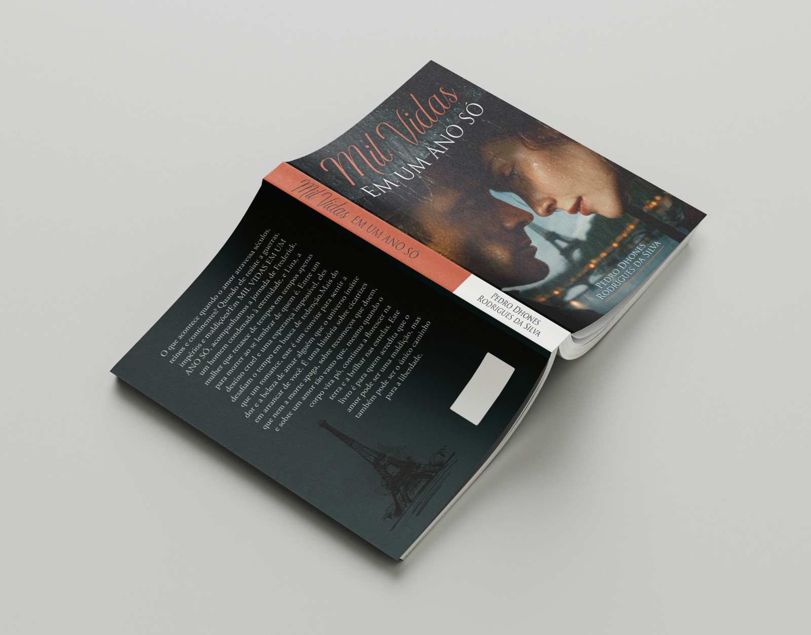

🧠
Descobrindo Seu Hiperfoco
Projeto voltado ao uso de tecnologia e inteligência artificial para apoiar autoconhecimento, identificação de habilidades e novas oportunidades para pessoas neurodivergentes.
Visitar projeto ↗MAIS DETALHES
Esta página reúne outras iniciativas, experiências e ideias que representam meu interesse por tecnologia, cultura, empreendedorismo e impacto social.
TECNOLOGIA E INOVAÇÃO
Projeto voltado ao uso de tecnologia e inteligência artificial para apoiar autoconhecimento, identificação de habilidades e novas oportunidades para pessoas neurodivergentes.
Visitar projeto ↗Uma proposta para facilitar a criação de presença digital e aproximar empreendedores das ferramentas disponíveis na internet.
Visitar projeto ↗Iniciativa que explora empreendedorismo, comércio digital e oportunidades relacionadas ao universo das plantas.
Visitar projeto ↗CULTURA E LITERATURA

Meu romance de estreia representa uma das experiências mais importantes da minha trajetória criativa. A obra conecta diferentes períodos históricos e países em uma narrativa sobre amor, destino, memória e espiritualidade.
Conhecer o livroPARTICIPAÇÃO COMUNITÁRIA
Minha participação no Conselho Municipal de Cultura representa meu interesse em contribuir coletivamente para o fortalecimento da cultura e da comunidade.

CONTINUAR EXPLORANDO
CAPACITAÇÃO, EMPREENDEDORISMO E TECNOLOGIA
Ane Cakes Fair — Da origem ao destino
Conectando talento, conhecimento e oportunidades.
O Ane Cakes Fair é um projeto de capacitação, empreendedorismo e valorização da confeitaria em Ilhéus, Bahia. Com o conceito “Da origem ao destino”, conecta o universo do cacau, chocolate e confeitaria a profissionais, empresas e empreendedores.
O projeto já capacitou cerca de 160 mulheres e busca transformar conhecimento e talento em oportunidades de trabalho e negócios, fortalecendo a economia e a identidade da região.
Minha atuação acontece na equipe estratégica e na área de tecnologia, contribuindo para o desenvolvimento e a estruturação do projeto. Atualmente, o Ane Cakes Fair está em desenvolvimento, com evento previsto para novembro de 2026.
MINHA ATUAÇÃO
Estratégia: participação na construção e organização das ideias do projeto.
Tecnologia: contribuição para soluções e experiências digitais relacionadas ao evento.
Desenvolvimento: atuação junto à equipe na preparação da próxima edição.
Próximo marco: evento previsto para novembro de 2026, em Ilhéus, Bahia.